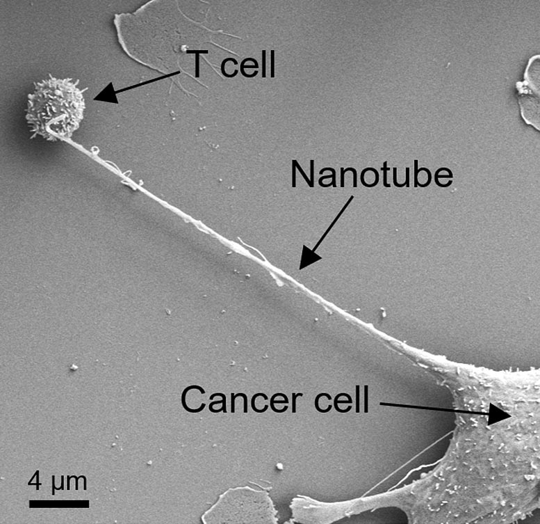

Hi, I'm Jules.
I'm from Italy, and this is my repository of work on mitochondria.
With a microgrant from Primordia, I spent the past months trying to move mitochondria from one cell to another, at the bench and on the computer. The work covers wet-lab experiments on transferring mitochondria into immune cells, computational pipelines that look for the cells best suited to receive and pass on mitochondria, disease comparisons, a cross-species pilot, and an ethical, environmental and market review of the field.
Each project opens to its own page with the full lab notes, including the things that didn't work.
“Science, my lad, is made up of mistakes, but they are mistakes which it is useful to make, because they lead little by little to the truth.”
Jules Verne, Journey to the Center of the Earth
Why I like this work
Mitochondria make most of the ATP a cell runs on, so they sit underneath almost everything the body does: energy, metabolism, and much of how cells are regulated. That puts them upstream of far more than any single disease.
They also have the best origin story in biology. They were free-living bacteria that moved into another cell and never left. Cells have been handing them to each other ever since. If we learned to direct that, we would be engineering endosymbiosis on purpose.

Two cells, reaching across a gap, passing on the thing that makes life run. It took 500 years and an electron microscope to find out the fresco was a cell biology diagram.
What I worked on
tap a project to open it01Mitochondrial transfer into neutrophils+
Transferring mitochondria into granulocytes. Uptake stayed low and the mitochondria lost activity after about 20 minutes. That pointed to a different approach: keep mitochondria in blood and stabilise them there.
Open project →02Mitochondrial transfer in blood after microgravity+
The same experiment, on blood exposed to simulated microgravity first. I'm looking for a clinostat, because this needs to be reproducible.
Open project →03Secondary mitochondrial transfer+
Using cells as "Uber vehicles" for mitochondria. A single-cell pipeline across the immune system to find which cells are best at receiving, carrying and donating mitochondria.
Open project →04Comparison against disease: leukemia+
How mitochondrial programs change between people with acute myeloid leukemia and healthy donors, one cell type at a time.
Open project →05More diseases and organelle-level modeling+
Microgravity, infarct, obesity, PCOS and more are queued. The long-term idea is a "virtual cell", but for the mitochondrion.
Open project →06Cross-species transfer: Chlorella → mammalian cells+
Can mitochondria from a photosynthetic alga be accepted by mammalian cells? A small pilot to test the limits of compatibility.
Open project →07Review, impact analysis and dose modeling+
The first combined ethical, environmental and market assessment of mitochondrial transfer, a dose-modeling proposal, and a case for revisiting mitochondrial transfer in IVF.
Open project →08Shadowing the ARCHIE project+
Learning how a working lab transplants mitochondria into granulocytes with the PORTER machine. It reshaped project 01.
Open project →A mitochondrion is the part of the cell that turns food into usable energy. It turns out cells can also hand them to each other, and that is what this whole repository is about.